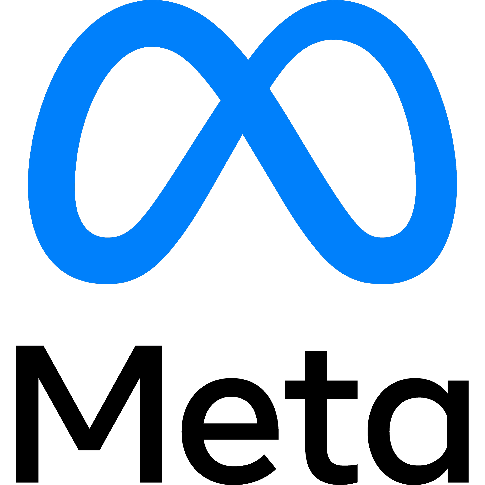
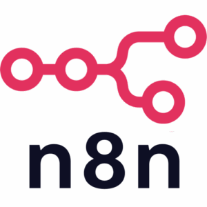
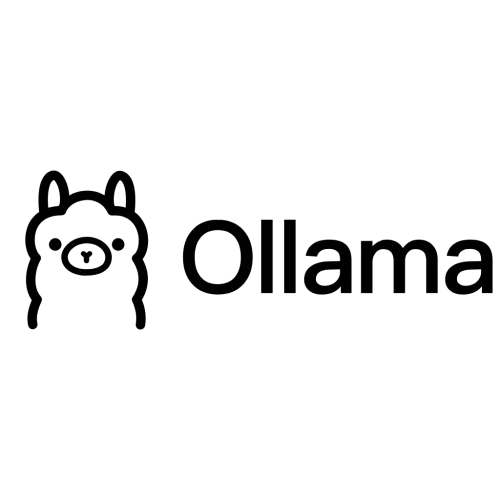
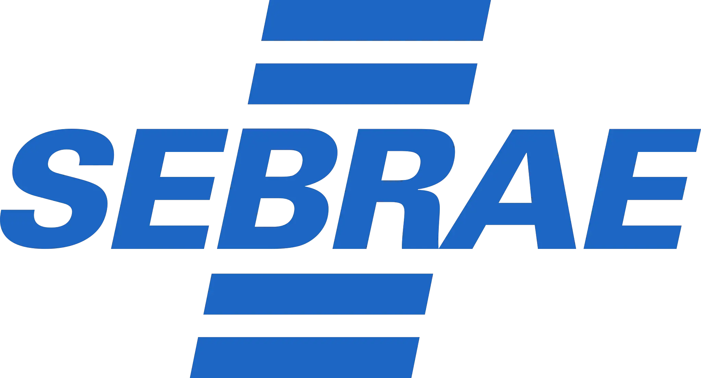
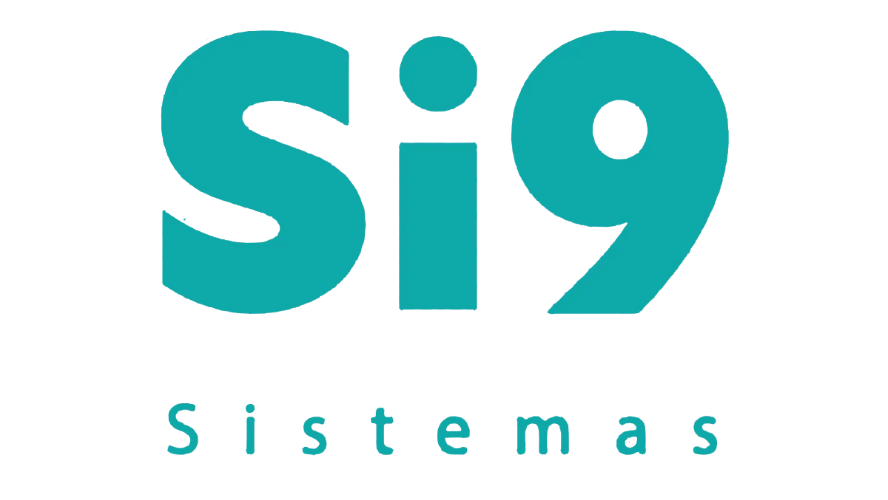
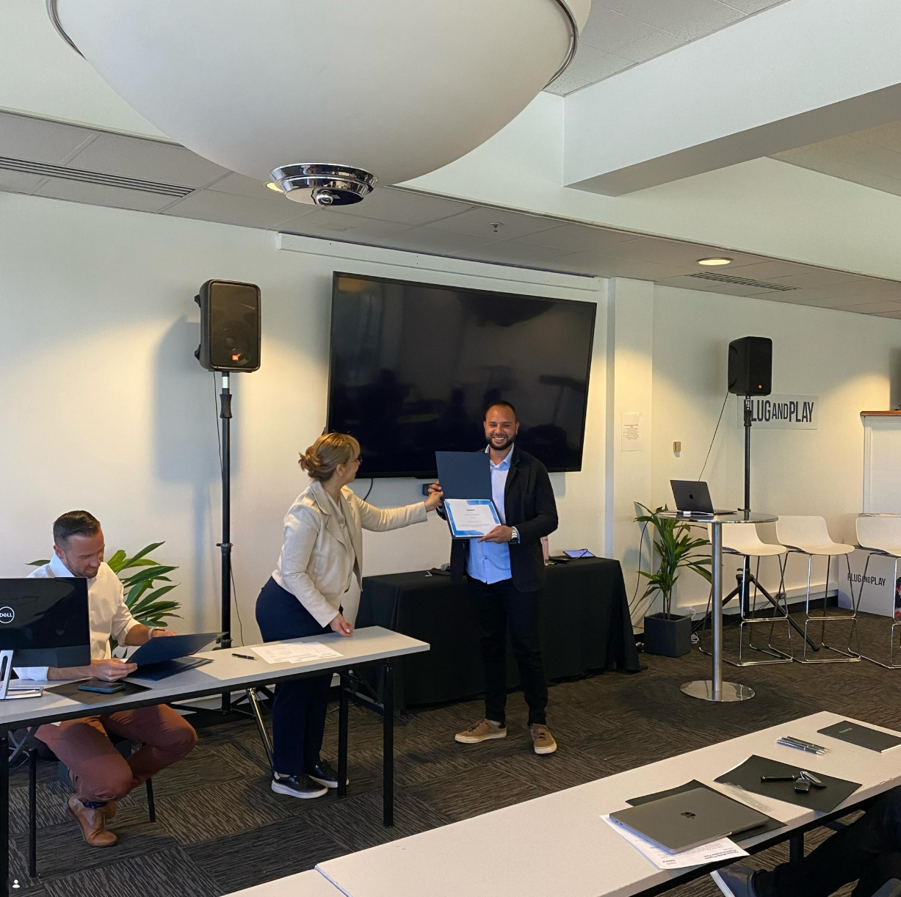
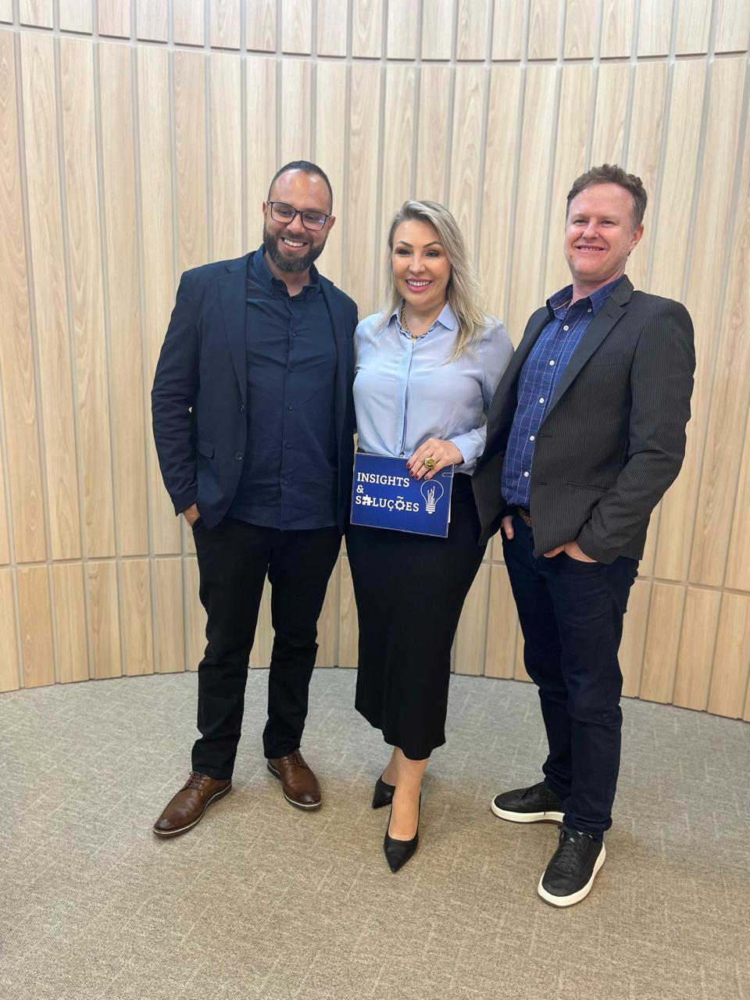

Telefone sempre ocupado
Pacientes ligam para confirmar horário, cancelar consulta, pedir preparo de exame e tirar dúvidas que poderiam ser resolvidas automaticamente.
Atendimento com IA que responde na hora, confirma presença e reorganiza a agenda quando alguém cancela. Da UBS ao hospital particular.

Quando telefone, WhatsApp, agenda médica e financeiro operam separados, a equipe perde tempo em tarefas repetidas e o paciente espera por respostas simples.
Pacientes ligam para confirmar horário, cancelar consulta, pedir preparo de exame e tirar dúvidas que poderiam ser resolvidas automaticamente.
Sem lembretes e confirmação ativa, a agenda parece cheia no sistema, mas chega vazia no consultório.
Atendentes precisam procurar histórico, convênio, profissional, agenda e status financeiro antes de dar uma resposta segura.
O paciente conversa no canal que já usa. O Ê-Bot consulta regras, agenda, disponibilidade e histórico para resolver ou encaminhar com contexto.
Agendar, remarcar, confirmar, pedir receita, consultar preparo ou falar com humano.
Valida convênio, especialidade, agenda médica, documentos e políticas da unidade.
Confirma o horário, envia a orientação, abre a solicitação ou encaminha o atendimento.
Lembretes no momento certo: presença, preparo, retorno e satisfação. As faltas caem sem sobrecarregar a equipe.
Cancelou? A IA aciona a lista de espera, ocupa a vaga automaticamente e avisa a recepção.
Crie automações inteligentes pelo próprio Ê-Bot Clinical, sem depender da equipe de TI. Defina gatilhos, regras, consultas na agenda e respostas automáticas para que a IA conduza cada atendimento de forma personalizada, 24 horas por dia.
Paciente conversa no WhatsApp da unidade, mesmo fora do expediente.
Reconhece o pedido do paciente: agendar, remarcar, confirmar, pedir receita, preparo ou falar com humano.
Valida convênio, especialidade, agenda médica, documentos e políticas da unidade.
Confirma o horário, envia a orientação, abre a solicitação ou encaminha o atendimento.
Quando precisa de humano, a conversa chega resumida e com contexto.
Dispara lembretes, pesquisa a satisfação e entrega relatórios de faltas, horários críticos e demandas da fila.
Respostas imediatas no WhatsApp: o paciente nunca fica sem retorno.
Confirmação ativa e lembretes antes de cada horário da agenda.
Agenda sempre previsível para profissionais e recepção.
A IA assume o atendimento fora do expediente e nos fins de semana, ampliando o volume operacional com a mesma equipe.
Cada módulo usa a mesma inteligência e conversa com os sistemas de gestão da sua unidade. Você começa pelo que mais pesa hoje, como agendamento e confirmação, e ativa o resto no seu ritmo: triagem, renovação de receitas, telefonia, CRM e insights de operação.
Sincronização com a disponibilidade real da agenda para marcar, remarcar e cancelar consultas dentro das regras da unidade. Quando um horário abre, a lista de espera ocupa a vaga e a agenda do sistema se atualiza sozinha.
Coleta sintomas, prioridade e especialidade antes do atendimento humano.
Confirma presença, envia lembretes no momento certo, entrega o preparo e reorganiza horários quando há cancelamentos.
Renovação de receitas, exames, anexos e orientações conduzidos pela IA, sem fila na recepção.
A consulta é transcrita e resumida pela IA, gerando registro limpo para o prontuário.
Vaga que abre é preenchida pela lista de espera, por prioridade e perfil do paciente.
A IA responde com o material oficial da unidade: protocolos, convênios e políticas.
Telefone integrado ao call center: as ligações da sua central são transcritas pela IA e viram registro organizado no sistema.
Volume de conversas, motivos de contato e horários críticos em tempo real para decidir com dados.
Quando precisa de humano, a conversa chega resumida e com contexto: ficha, protocolo e anexos já organizados. O paciente não repete a história, quem assume já sabe o que foi falado e o atendimento segue no mesmo lugar, sem mudar de canal.
Cadastro, histórico, documentos e a jornada de cada consulta ficam junto do atendimento. O que a IA descobre entra na ficha. O que a ficha precisa aciona a automação. Nada fica preso na memória da recepção.
Cadastro, histórico e documentos conectadosDo primeiro “tem horário?” à consulta realizada: cada conversa chega com ficha, etapa e histórico, sem recopiar dados à mão.
Jornadas automáticas por etapa: lembretes, preparo e avisos que acompanham o paciente até a consulta, no ritmo certo da agenda.
Conversa, anexos, receitas e retornos no mesmo lugar. O próximo atendimento começa com o contexto do anterior, de qualquer atendente.
Todo contato ganha um protocolo rastreável: quem atendeu, quando, em qual canal, com qual resolução.
A ficha conversa com agenda, prontuário e sistemas de gestão de saúde via integração: MV, RANG, FEEGOW, IDS e APIs existentes.
Chamadas pelo WhatsApp e PABX no mesmo ticket: a ligação é transcrita pela IA e anexada ao protocolo do paciente.
Painel ao vivo com atendimentos ativos, fila, confirmações e encaixes recuperados pela IA, atualizado a cada poucos segundos.
Ferramenta desenvolvida e mantida junto do Ê-Bot Clinical: evolução contínua, suporte direto e o roadmap nas mãos do mesmo time.
Um único lugar para agenda, atendimentos, automação e gestão da clínica. Layout enxuto, poucos cliques e dados atualizados em tempo real, pensado para a rotina da recepção. Tudo abaixo é interativo: troque de tela e veja a operação acontecer.
Veja como está a operação da clínica hoje: atendimentos, agenda, IA e recepção.
Atendimentos hoje
1.284Resolvidos pela IA
73%Aguardando humano
42Consultas confirmadas
312Tempo médio de resposta
18sTempo médio de espera
2m14Faltas evitadas
38Fora do horário, atendidos pela IA
156Volume de conversas, transferências e resoluções automáticas ao longo do dia.
Pico de atendimento entre 18h e 21h. A IA resolveu 76% das conversas fora do horário comercial.
Ranking dos principais motivos de demanda operacional.
Últimos atendimentos com contexto de canal e resolução.
Assumidos, tempo de resposta, avaliação e SLA por perfil.
| Perfil | Assumidos | Resposta | SLA |
|---|---|---|---|
| AD Admin | 68 | 01m 08s | 98% |
| DR Dr. Ruan | 24 | 03m 22s | 94% |
| SS Superuser | 51 | 01m 46s | 96% |
| DS Designer | 12 | 05m 12s | 89% |
Horários críticos, confirmações e encaixes em tempo real.
Consulta particular · Paciente já enviou exames
Retorno cardiologia · 2º lembrete agendado para 20h
Cancelamento detectado · IA contatando lista de espera
Primeira consulta · Orientação de chegada enviada
Horários que a IA já tentou preencher.
O que a recepção precisa resolver agora.
Conversas do WhatsApp e do webchat na mesma fila.
WhatsApp · há 2 min · protocolo #4821
Dados de demonstração do ambiente de protótipo. A versão em produção usa as informações reais da sua unidade.
O Ê-Bot atende dentro do WhatsApp que o paciente já abre todo dia. Identifica o cadastro, valida convênio, remarca consultas, envia orientações e recebe documentos. Tudo o que é conversado é registrado automaticamente na ficha do paciente, confiável e pronta para qualquer atendimento da equipe.
Nome, convênio, nascimento e contato confirmados sem enviar formulário.
Exames, receitas e comprovantes enviados no chat vão direto para a ficha.
O próximo atendimento começa com o contexto da conversa anterior.
Quando precisa de humano, a ficha chega preenchida, resumida e com os anexos.
O Ê-Bot Clinical opera em Unidades Públicas de Saúde e Clínicas Privadas, com o mesmo canal, regras próprias para cada realidade e respeito total ao fluxo de cada rede.
Agenda, prontuário, sistemas de gestão de saúde, CRM, automação e IA entram no mesmo fluxo por API, webhooks e conectores. O atendimento circula entre as ferramentas da sua operação enquanto a equipe segue na rotina de sempre.
As integrações entram por etapas, começando pelo que mais pesa hoje. O restante acompanha a evolução da sua unidade.
API REST, webhooks e credenciais por escopo para a sua TI criar, testar e ajustar cada integração.
Automação, IA, e-mail e mensageria se conectam à jornada do atendimento.

Exemplos de ferramentas que se conectam ao Ê-Bot. A composição acompanha a sua operação.
Endpoints de mensagens, pacientes e agendamentos, com Bearer token e escopo por módulo. Os eventos chegam em JSON no endpoint que a sua equipe indicar.
POST https://sua-clinica.com.br/webhooks/ebot
{
"evento": "atendimento.encerrado",
"canal": "whatsapp",
"agendamento": {
"id": "AG-20498",
"inicio": "2026-10-22T09:00:00-03:00",
"status": "confirmado"
}
}Exemplo de payload. Os campos variam conforme o fluxo configurado na implantação.
Google Agenda e agenda do sistema atualizam juntas. Marcação, encaixe e cancelamento refletem dos dois lados e a equipe para de conferir duas telas.
Automação, IA, mensageria e CRM se somam ao atendimento sem tirar ninguém da ferramenta em que a equipe já trabalha.
O Ê-Bot Clinical integra-se nativamente aos sistemas de gestão de saúde, agenda, prontuário e canais digitais, em uma operação omnichannel e previsível. A operação conjunta já acontece com MV, RANG, FEEGOW e IDS.
Prontuário eletrônico e gestão hospitalar conectados à automação do atendimento.
integração nativaGestão de clínicas e centros médicos na mesma fila inteligente do Ê-Bot.
integração nativaAgendamento e gestão de clínicas alinhados à agenda em tempo real.
integração nativaGestão de laboratórios e diagnóstico por imagem com fichas sincronizadas.
integração nativa




O Ê-Bot Clinical é desenvolvido pela Ê-Sistemas, empresa brasileira de tecnologia com engenharia, produto e suporte no mesmo time. Nada de software genérico: cada fluxo de automação e cada linha de IA que atende o seu paciente nasceu da nossa própria base de código, evoluindo com cada unidade que colocamos na operação.


O Ê-Bot Clinical atua como uma camada controlada de atendimento, com registros, regras de encaminhamento e integração sob medida com a realidade da unidade.
A operação considera princípios da LGPD como finalidade, necessidade, transparência, segurança, prevenção e responsabilização. Conversas, consentimentos, bases de conhecimento e transferências para humanos são estruturados para reduzir exposição de dados sensíveis e manter rastreabilidade operacional.
A implantação é pensada para não travar a rotina da recepção.
Levantamos canais, dúvidas frequentes, agenda, regras e pontos de transferência para humanos.
Montamos fluxos, tom de voz, base de conhecimento e integrações prioritárias.
Ativamos um fluxo controlado, monitoramos conversas e ajustamos respostas.
Relatórios mostram gargalos, horários críticos e novas automações recomendadas.
Converse com o Ê-Bot Clinical e veja como ele explica automações, agenda, lembretes e implantação para a sua operação.
Da Unidade Básica de Saúde ao hospital particular. Reduza filas, faltas e custos administrativos sem trocar toda a sua operação.